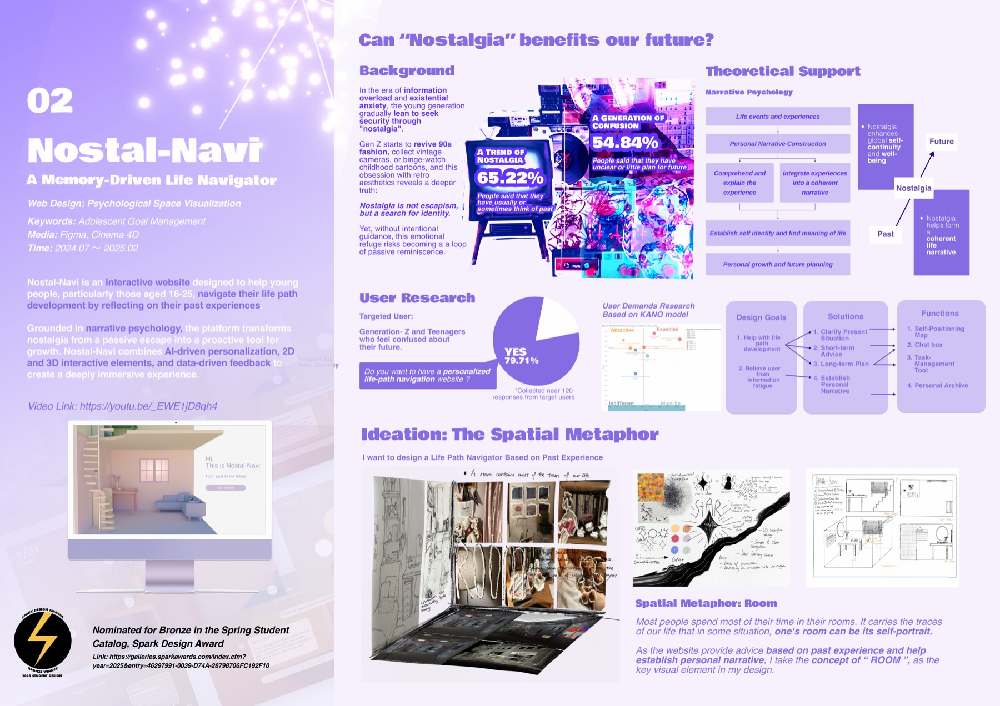
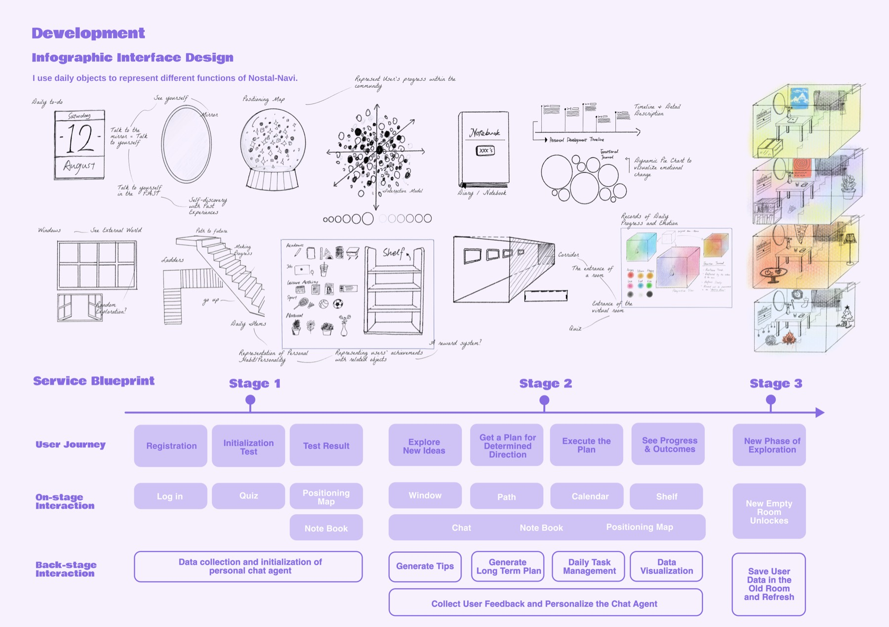
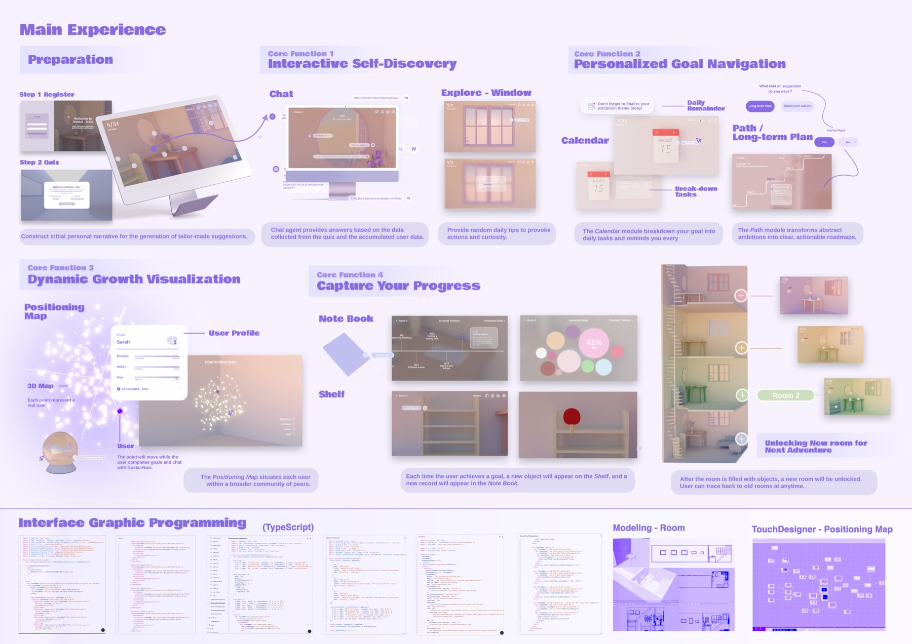

TITLENostal-Navi
记忆驱动人生导航网站
记忆驱动人生导航网站
TYPEWeb Design / UX
DATE2024.07 — 2025.02
AWARDBronze, Spark Design Award (Spring Student Catalog)
ROLEResearch, UX, 3D, front-end
TOOLSFigma · Cinema 4D · TypeScript · TouchDesigner
Nostal-Navi is an interactive website designed to help young people, particularly those aged 16–25, navigate their life path development by reflecting on their past experiences. Grounded in narrative psychology, the platform transforms nostalgia from a passive escape into a proactive tool for growth — combining AI-driven personalisation, 2D and 3D interactive elements, and data-driven feedback to create a deeply immersive experience.